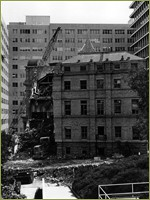
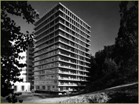
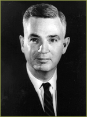
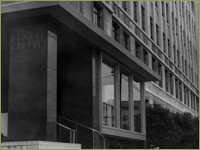
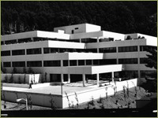
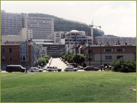

{% include nav.html %}
Other buildings were demolished in this period, such as the old Medical School Building – completed in 1898 and located in what is now the quad between the Medical Sciences Building and the School of Nursing – as well as the Residence Hall at 610 Parnassus which was demolished in 1973.
In addition, UCSF was able to turn around its relationship with the surrounding community from outright hostility in some quarters to pride and participation in UCSF. As part of a series of accommodations to neighborhood and state legislative concerns about further growth, in the 1976 Long Range Development Plan, the Regents adopted several policies to limit growth at the Parnassus Heights site. The Regents designated 58 acres on the steep slopes of Mount Sutro as an open space reserve, and designated the boundaries of the campus so as to limit the further acquisition or leasing of property by UCSF. Certain houses at the western border of the campus, on Third and Fifth Avenues in particular, were to be returned to residential use from office uses, and a transportation study was funded. Most importantly, the Regents limited the amount of built space at the Parnassus Heights site to 3.55 million gross square feet, and recognized the principle of limiting the average daily population there.
Meanwhile the School of Dentistry – one of only two dental schools in northern California – had long outgrown its previous space in the Clinical Sciences and Medical Sciences buildings, and was at risk of losing its accreditation if the problems of shortage of space and facilities were not resolved. By 1980, both the refurbishment of Moffitt Hospital and the construction of the new School of Dentistry were complete.
In 1985 UCSF acquired the Laurel Heights site in an effort to alleviate crowded conditions on the Parnassus campus. This episode began a long legal battle with the Laurel Heights Improvement Association, concerned about the Environmental Impact Report that detailed plans for UCSF’s use of Laurel Heights. The report included plans for the relocation the majority of the faculty, staff and research facilities of the School of Pharmacy and pharmacology labs. In 1991 the California Court of Appeal ruled in UCSF’s favor that it did not misrepresent development plans and Laurel Heights eventually grew to become a fully occupied campus of UCSF, housing social science and humanities departments, health policy researchers, and administrative arms of various university and departmental offices. Only a small contingent of the School of Pharmacy’s faculty and staff eventually took up occupancy at Laurel Heights.
>> The Formation of the Graduate Division
1959–1989 Modernization and the Expansion of Scientific and Clinical Training
Updates to Campus Buildings

In the period from the 1960s to 1980s, the University negotiated a number of refurbishments to the aging buildings such as the UC Hospital, originally completed in 1917, and the Clinics Building which was originally completed in 1933 to accommodate medical and dental outpatient clinics.
The old Medical School Building was demolished in 1967.
Other buildings were demolished in this period, such as the old Medical School Building – completed in 1898 and located in what is now the quad between the Medical Sciences Building and the School of Nursing – as well as the Residence Hall at 610 Parnassus which was demolished in 1973.

New buildings included University House which opened in 1965 to be used as the Chancellor’s Residence, and the two glass towers behind the Medical Science and Clinical buildings called Health Science East and West, which were completed in 1966. In 1972, the “Moffitt Modernization Project” was finalizing plans for updating the hospital. The School of Nursing building was competed in 1972 and the Ambulatory Care Center building on the opposite side of Parnassus Avenue was completed in 1973. In 1975, UCSF occupied over 3,000,000 square feet of clinical, research and office space.
Health Sciences West tower, completed in 1966

Francis A. Sooy became the fourth chancellor of the campus in 1972. His tenure saw the culmination of efforts that began in the 1950s that gained UCSF recognition locally and nationally as a premier health sciences campus and UCSF became one of the most successful research universities in the country. The new School of Dentistry building (1980), the modernized Moffitt Hospital projects (1980), and the new Long Hospital (1983) were completed. Sooy recruited outstanding physicians and researchers for some of the top campus positions, including three new deans.
Francis A. Sooy
In addition, UCSF was able to turn around its relationship with the surrounding community from outright hostility in some quarters to pride and participation in UCSF. As part of a series of accommodations to neighborhood and state legislative concerns about further growth, in the 1976 Long Range Development Plan, the Regents adopted several policies to limit growth at the Parnassus Heights site. The Regents designated 58 acres on the steep slopes of Mount Sutro as an open space reserve, and designated the boundaries of the campus so as to limit the further acquisition or leasing of property by UCSF. Certain houses at the western border of the campus, on Third and Fifth Avenues in particular, were to be returned to residential use from office uses, and a transportation study was funded. Most importantly, the Regents limited the amount of built space at the Parnassus Heights site to 3.55 million gross square feet, and recognized the principle of limiting the average daily population there.

The old dental clinics in what is now referred to as the Clinical Sciences Building.

With the space limitation in place, Parnassus researchers found themselves in increasingly cramped quarters. This lack of space prevented faculty from pursuing additional research as the National Institutes of Health (NIH) budget expanded and forced some to share space with researchers in unrelated fields. Ironically, this intermingling of researchers ultimately led to scientific collaborations that would not have otherwise taken place.
The new School of Dentistry building, completed in 1980
Meanwhile the School of Dentistry – one of only two dental schools in northern California – had long outgrown its previous space in the Clinical Sciences and Medical Sciences buildings, and was at risk of losing its accreditation if the problems of shortage of space and facilities were not resolved. By 1980, both the refurbishment of Moffitt Hospital and the construction of the new School of Dentistry were complete.

In 1977 the University of California Office of the President agreed to plans for the construction of a new UCSF library. With help from a $400 million general obligation bond, the plan was to start construction in 1987 for the new facility to house the 600,000 volume collection as well as reading rooms, study rooms and facilities for instructional technology. The building opened in 1990 and was officially dedicated in March 1991 at UCSF’s Founders Day.
Construction of the UCSF Library (the building to the left of the crane)
In 1985 UCSF acquired the Laurel Heights site in an effort to alleviate crowded conditions on the Parnassus campus. This episode began a long legal battle with the Laurel Heights Improvement Association, concerned about the Environmental Impact Report that detailed plans for UCSF’s use of Laurel Heights. The report included plans for the relocation the majority of the faculty, staff and research facilities of the School of Pharmacy and pharmacology labs. In 1991 the California Court of Appeal ruled in UCSF’s favor that it did not misrepresent development plans and Laurel Heights eventually grew to become a fully occupied campus of UCSF, housing social science and humanities departments, health policy researchers, and administrative arms of various university and departmental offices. Only a small contingent of the School of Pharmacy’s faculty and staff eventually took up occupancy at Laurel Heights.
>> The Formation of the Graduate Division